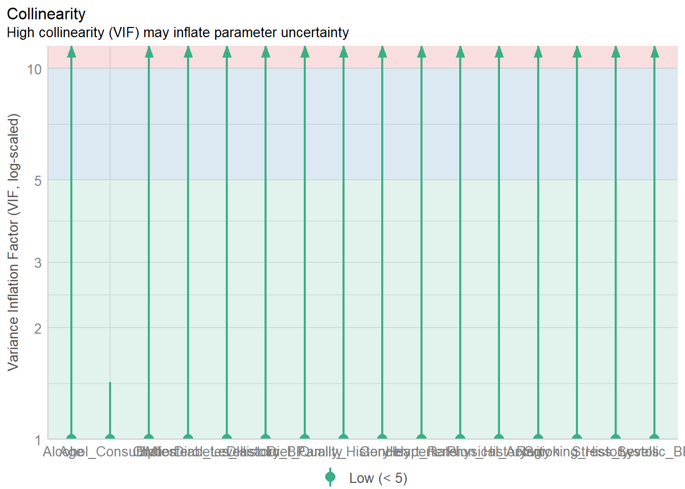
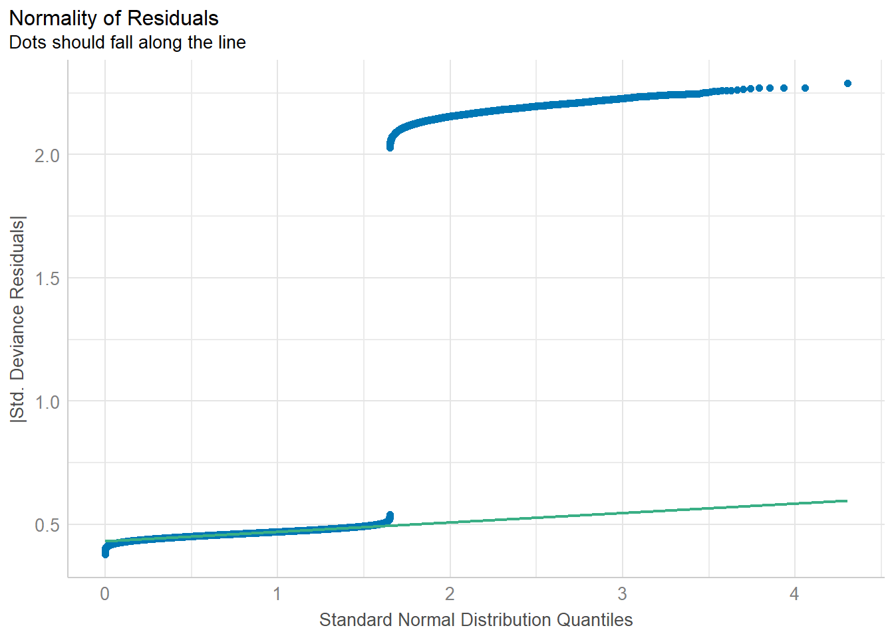

pacman::p_load(tidyverse, performance)Take-Home Exercise 01
1. Introduction
2. Getting Started
(intro and significance of data)
2.1 Loading the relevant libraries
The following R packages will be used:
tidyverse:performance:
2.2 Data source and importing data
In this assignment, the “Heart Attack in Japan Youth Vs Adult” data will be used. The dataset is retrieved from Kaggle.
We import the dataset, japan_heart_attack_dataset.csv, using read_csv() of readr package into R.
heart_attack <- read_csv("data/japan_heart_attack_dataset.csv")3. Data Pre-Processing
View data
glimpse(heart_attack)Rows: 30,000
Columns: 32
$ Age <dbl> 56, 69, 46, 32, 60, 25, 78, 38, 56, 75, 36, 40…
$ Gender <chr> "Male", "Male", "Male", "Female", "Female", "F…
$ Region <chr> "Urban", "Urban", "Rural", "Urban", "Rural", "…
$ Smoking_History <chr> "Yes", "No", "Yes", "No", "No", "No", "No", "Y…
$ Diabetes_History <chr> "No", "No", "No", "No", "No", "No", "Yes", "No…
$ Hypertension_History <chr> "No", "No", "No", "No", "No", "No", "Yes", "No…
$ Cholesterol_Level <dbl> 186.4002, 185.1367, 210.6966, 211.1655, 223.81…
$ Physical_Activity <chr> "Moderate", "Low", "Low", "Moderate", "High", …
$ Diet_Quality <chr> "Poor", "Good", "Average", "Good", "Good", "Go…
$ Alcohol_Consumption <chr> "Low", "Low", "Moderate", "High", "High", "Hig…
$ Stress_Levels <dbl> 3.644786, 3.384056, 3.810911, 6.014878, 6.8068…
$ BMI <dbl> 33.96135, 28.24287, 27.60121, 23.71729, 19.771…
$ Heart_Rate <dbl> 72.30153, 57.45764, 64.65870, 55.13147, 76.667…
$ Systolic_BP <dbl> 123.90209, 129.89331, 145.65490, 131.78522, 10…
$ Diastolic_BP <dbl> 85.68281, 73.52426, 71.99481, 68.21133, 92.902…
$ Family_History <chr> "No", "Yes", "No", "No", "No", "No", "No", "No…
$ Heart_Attack_Occurrence <chr> "No", "No", "No", "No", "No", "No", "No", "No"…
$ Extra_Column_1 <dbl> 0.40498852, 0.03627815, 0.85297888, 0.39085280…
$ Extra_Column_2 <dbl> 0.43330004, 0.51256694, 0.21959083, 0.29684675…
$ Extra_Column_3 <dbl> 0.62871236, 0.66839275, 0.61343656, 0.15572404…
$ Extra_Column_4 <dbl> 0.70160955, 0.11552874, 0.50800995, 0.87025144…
$ Extra_Column_5 <dbl> 0.49814235, 0.42381938, 0.90066981, 0.39035591…
$ Extra_Column_6 <dbl> 0.007901312, 0.083932768, 0.227205241, 0.40318…
$ Extra_Column_7 <dbl> 0.79458257, 0.68895108, 0.49634358, 0.74140891…
$ Extra_Column_8 <dbl> 0.29077922, 0.83016364, 0.75210679, 0.22396813…
$ Extra_Column_9 <dbl> 0.49719307, 0.63449028, 0.18150125, 0.32931387…
$ Extra_Column_10 <dbl> 0.52199452, 0.30204337, 0.62918031, 0.14319054…
$ Extra_Column_11 <dbl> 0.79965663, 0.04368285, 0.01827617, 0.90778075…
$ Extra_Column_12 <dbl> 0.72239788, 0.45166789, 0.06322702, 0.54232201…
$ Extra_Column_13 <dbl> 0.1487387, 0.8786714, 0.1465122, 0.9224606, 0.…
$ Extra_Column_14 <dbl> 0.8340099, 0.5356022, 0.9972962, 0.6262165, 0.…
$ Extra_Column_15 <dbl> 0.061632229, 0.617825340, 0.974455410, 0.22860…Remove extra columns
heart_attack <- heart_attack[, 1:17]Check for duplicated values and missing values
# Check for duplicated values
heart_attack[duplicated(heart_attack),]# A tibble: 0 × 17
# ℹ 17 variables: Age <dbl>, Gender <chr>, Region <chr>, Smoking_History <chr>,
# Diabetes_History <chr>, Hypertension_History <chr>,
# Cholesterol_Level <dbl>, Physical_Activity <chr>, Diet_Quality <chr>,
# Alcohol_Consumption <chr>, Stress_Levels <dbl>, BMI <dbl>,
# Heart_Rate <dbl>, Systolic_BP <dbl>, Diastolic_BP <dbl>,
# Family_History <chr>, Heart_Attack_Occurrence <chr># Check for missing values
any(is.na(heart_attack))[1] FALSE4. Exploratory Data Analysis
heart_attack$Heart_Attack_Occurrence <- ifelse(heart_attack$Heart_Attack_Occurrence == "Yes",1,0)
heart_attack# A tibble: 30,000 × 17
Age Gender Region Smoking_History Diabetes_History Hypertension_History
<dbl> <chr> <chr> <chr> <chr> <chr>
1 56 Male Urban Yes No No
2 69 Male Urban No No No
3 46 Male Rural Yes No No
4 32 Female Urban No No No
5 60 Female Rural No No No
6 25 Female Rural No No No
7 78 Male Urban No Yes Yes
8 38 Female Urban Yes No No
9 56 Male Rural No No Yes
10 75 Male Urban No No No
# ℹ 29,990 more rows
# ℹ 11 more variables: Cholesterol_Level <dbl>, Physical_Activity <chr>,
# Diet_Quality <chr>, Alcohol_Consumption <chr>, Stress_Levels <dbl>,
# BMI <dbl>, Heart_Rate <dbl>, Systolic_BP <dbl>, Diastolic_BP <dbl>,
# Family_History <chr>, Heart_Attack_Occurrence <dbl>model <- glm(Heart_Attack_Occurrence ~., family = binomial(link = 'logit'), data = heart_attack)
model
Call: glm(formula = Heart_Attack_Occurrence ~ ., family = binomial(link = "logit"),
data = heart_attack)
Coefficients:
(Intercept) Age
-2.2142461 0.0010545
GenderMale RegionUrban
0.0721267 -0.0016410
Smoking_HistoryYes Diabetes_HistoryYes
0.0503918 0.0613686
Hypertension_HistoryYes Cholesterol_Level
0.0290893 -0.0001142
Physical_ActivityLow Physical_ActivityModerate
-0.0461076 0.0383141
Diet_QualityGood Diet_QualityPoor
0.0268658 -0.0370390
Alcohol_ConsumptionLow Alcohol_ConsumptionModerate
0.0112375 -0.0618047
Alcohol_ConsumptionNone Stress_Levels
0.0367924 -0.0206483
BMI Heart_Rate
-0.0034350 0.0018603
Systolic_BP Diastolic_BP
-0.0011872 0.0014894
Family_HistoryYes
-0.0101681
Degrees of Freedom: 29999 Total (i.e. Null); 29979 Residual
Null Deviance: 19350
Residual Deviance: 19320 AIC: 19360cln_heart_attack <- check_collinearity(model)
plot(cln_heart_attack)
check_norm <- check_normality(model)
plot(check_norm)